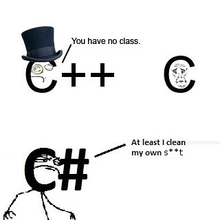

Object Orientated Programming
Preface
Programming languages can be classified by their paradigm. A programming paradigm is a way of programming. Some languages may be specialized in one paradigm while others
can be programmed in more than one. To learn more about paradigms, this article will be helpful: 1
For the sake of this article, we will only be focusing soely on one paradigm: object oriented, although the higher-level language (lwlC) can be considered imperataive too.

Some complicated topics are not covered!
For the sake of this very simple "lwlC" language, some advanced object oriented topics are not covered. If I missed something that you think should be covered, please let me know!
A Brief Definition of OOP
Object-oriented programming (OOP) is a programming paradigm based on the concept of "objects", which may contain data, in the form of fields, often known as attributes; and code, in the form of procedures, often known as methods. A feature of objects is that an object's procedures can access and often modify the data fields of the object with which they are associated (objects have a notion of "this" or "self").
Object-oriented programming. (2017, March 14). Retrieved March 15, 2017, from Wikipedia
A Brief Overview of OOP Concepts
Object
The basic (and most important) component in object oriented programming. It is both data and methods that modify the data in one entity. Objects are created by calling a constructor. The constructor is defined in the class of the object. The creation of an object is called instantiation and it creates an instance of the object.
Class
Classes define what an object is going to be. It defines the fields and functions an object can have and perform. However, static classes are classes that can not be instantiated. As a result, a static class can not have a constructor method. They are a container for a set of method(s) that operate via a set of input parameters. A static class can only contain static members, which means all fields must be static. They cannot be inherited; so they are sealed.
Abstraction
I'm going to insert a quote here because it is going to explain it better than what I was about to say:
Abstraction is "the process of identifying common patterns that have systematic variations; an abstraction represents the common pattern and provides a means for specifying which variation to use" (Richard Gabriel).
Let's take some C# code from the Microsoft website: ``` C# linenums="1" public abstract class Shape { private string name;
public Shape(string aName) //Constructor { ID = aName; } // This can be modified. Note the set keyword. public string ID { get { return name; } set { name = value } } // Area is read-only. Note the absense of the set keyword. public abstract double Area { get; } // Override the object.ToString() that comes with C# public override string ToString() { return ID + " Area is " + string.Format("{0:F2}", Area); }
}
The above code identified the *common attributes of shapes* - the area and name. Now, we can create a variation of this shape by inheriting it:
```C# linenums="1"
public class Square : Shape // A square is a shape
{
// The side attribute is unique to squares only. Since it was not needed,
// we did not put it in our abstract class. Instead, we put it in our
// (variation) child class. Ba-bam! Abstraction!
private int side;
// Let us override the default constructor to add a side parameter
public Square(int aSide, string aID)
: base (aID)
{
this.side = aSide;
}
// Here, we return the area as side squared
public override double Area { get { return side * side; } }
}
So, we can see that a square has a new property: side (length). As that property was unique to only the square (insert asterisk here), we did not add the property to our abstract class, because it was not needed. Instead, we added it to our child Square class. To see more in depth into the example used: 2
Encapsulation
Ok, do not confuse this with abstraction. They are different concepts. Encapsulation is the means of hiding information that is not needed to the client of the object.
We encapsulate to reduce the complexity of the code. In some way, you can take an object someone has already made, use it in your code, and it should just work (insert asterisk).
Encapsulation is achieved by using the accesor keywords: public and private. The client of the object does not, and should not need to know how and object is doing its work,
and see the inner "guts" of the object. So, it is like a black box of some ways, where it "just works". Recommended article: 3
Alright. Some definitions 4 :
Mutater: This is a method that modifies the properties/state of an object. It can be a method, or through the set keyword.
Accessor: This is something that gets the state of an object, usually through the get keyword.
Inheritance
Inheritance is where you want the properties and methods of one object to be present in another. You may recall our abstract class Shape example. In that example, the Square
class inherits the Shape class. Due to the Shape class being abstract, the Square class must override all the methods and properties outlined in the Shape class. With
normal class → class inheritance, overriding is not mandated. Let's say you have a class:
```C# linenums="1"
public class Foo
{
public void Bar()
{
Console.WriteLine("Hello from Foo!");
}
public void Bar1()
{
Console.WriteLine("Hello from Foo!");
}
}
public class FooBar : Foo { // We are going to override the Bar1() method defined in Foo public override void Bar1() { Console.WriteLine("BWAHAHAHA. I have overriden!"); }
public void DoStuff()
{
Console.WriteLine("Hello from FooBar!");
}
}
We can see that `FooBar` inherits `Foo`. This means that you can call `Bar()` from `FooBar`, but the output of `Bar1()` from `FooBar` will be changed as it was overriden: ```C# linenums="1" // Create an instance of our two objects Foo obj = new Foo(); FooBar obj2 = new FooBar(); obj.Bar(); obj.Bar1(); obj2.Bar(); //Inherited obj2.Bar1(); //Overriden obj2.DoStuff(); //Added
This will output:
linenums="1"Hello from Foo!Hello from Foo!Hello from Foo!BWAHAHAHA. I have overriden!Hello from FooBar!
Here is a nice article with a nice diagram to help you through: 5
Polymorphism
In the word polymorphism, poly is the Greek word for "many" or "much," and "morph" means "forms." Polymorphism is the ability for a method to proccess objects differently based on their type or class. In other words, it is the ability to override or redefine methods from parent classes.